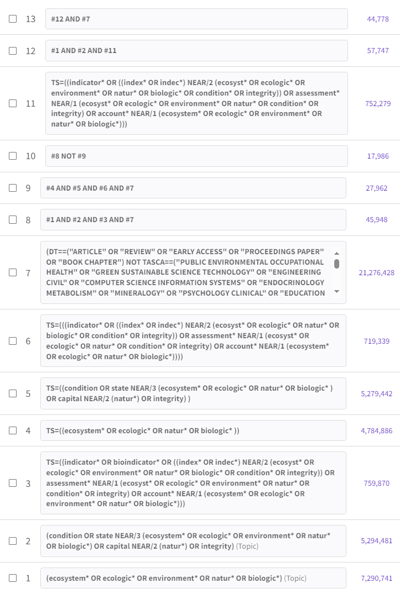

Updated WoS search late 2023
Recap
The scoping study, which concluded with the original Wos search, was done 2022-03-24. Title and abstract screening started in 2023-12-07. Now it is 2023-12-12 and time to update the original WoS search to get the latest records.
I have recently (yesterday) also added the SEEA EA knowledge base to the Rayyan project for years 2022 and 2023.
Updated search string
We want to keep things as similar as possible. At the same time, we made some experiences in the first title and abstract screening about which serach terms worked and which that didn’t. And we have a challenge with our search being to unspecific, so we wan to trim it down if we can, without loosing relevant records.
These terms did not seem to work:
- environment*
- mainly capturing cases where a variable was used as a model predictor
- bioindicator*
- mainly capturing pollution or body condition related records
Also natur* and integrity were also not very good.
Here is how I test the effect of removing environment* and bioindicator*.
These are the three-times-two search strings (P-O-O) and the WoS categories filter. The words that we might want to take out of the 2023 search are in bold.
Strings #1 and 4 (‘P’): (ecosystem* OR ecologic* OR environment* OR natur* OR biologic*) (Topic)
String #2 and 5 (‘O1’): (condition OR state NEAR/3 (ecosystem* OR ecologic* OR environment* OR natur* OR biologic) OR capital NEAR/2 (natur) OR integrity) (Topic)
String #3 and 6 (‘O2’): TS=((indicator* OR bioindicator* OR ((index* OR indec) NEAR/2 (ecosyst OR ecologic* OR environment* OR natur* OR biologic* OR condition* OR integrity)) OR assessment* NEAR/1 (ecosyst* OR ecologic* OR environment* OR natur* OR condition* OR integrity) OR account* NEAR/1 (ecosystem* OR ecologic* OR environment* OR natur* OR biologic*)))
String #7 (WoS categories): (DT==(“ARTICLE” OR “REVIEW” OR “EARLY ACCESS” OR “PROCEEDINGS PAPER” OR “BOOK CHAPTER”) NOT TASCA==(“PUBLIC ENVIRONMENTAL OCCUPATIONAL HEALTH” OR “GREEN SUSTAINABLE SCIENCE TECHNOLOGY” OR “ENGINEERING CIVIL” OR “COMPUTER SCIENCE INFORMATION SYSTEMS” OR “ENDOCRINOLOGY METABOLISM” OR “MINERALOGY” OR “PSYCHOLOGY CLINICAL” OR “EDUCATION EDUCATIONAL RESEARCH” OR “HEALTH CARE SCIENCES SERVICES” OR “NUTRITION DIETETICS” OR “ASTRONOMY ASTROPHYSICS” OR “MEDICINE RESEARCH EXPERIMENTAL” OR “NUCLEAR SCIENCE TECHNOLOGY” OR “CLINICAL NEUROLOGY” OR “TELECOMMUNICATIONS” OR “IMMUNOLOGY” OR “NANOSCIENCE NANOTECHNOLOGY” OR “BUSINESS FINANCE” OR “SPORT SCIENCES” OR “METALLURGY METALLURGICAL ENGINEERING” OR “ONCOLOGY” OR “ELECTROCHEMISTRY” OR “SPECTROSCOPY” OR “ENGINEERING PETROLEUM” OR “OPTICS” OR “HEALTH POLICY SERVICES” OR “DEVELOPMENT STUDIES” OR “RADIOLOGY NUCLEAR MEDICINE MEDICAL IMAGING” OR “SOCIAL SCIENCES BIOMEDICAL” OR “DENTISTRY ORAL SURGERY MEDICINE” OR “TROPICAL MEDICINE” OR “ENGINEERING OCEAN” OR “ENGINEERING BIOMEDICAL” OR “PEDIATRICS” OR “NURSING” OR “PSYCHOLOGY EXPERIMENTAL” OR “REHABILITATION” OR “ENGINEERING MANUFACTURING” OR “PSYCHOLOGY APPLIED” OR “SURGERY” OR “ERGONOMICS” OR “PHYSICS MULTIDISCIPLINARY” OR “PSYCHOLOGY BIOLOGICAL” OR “REPRODUCTIVE BIOLOGY” OR “ENGINEERING AEROSPACE” OR “LAW” OR “MEDICAL INFORMATICS” OR “GERONTOLOGY” OR “MATHEMATICS APPLIED” OR “CHEMISTRY INORGANIC NUCLEAR” OR “PHYSICS ATOMIC MOLECULAR CHEMICAL” OR “CHEMISTRY MEDICINAL” OR “MATERIALS SCIENCE COMPOSITES” OR “MEDICINE LEGAL” OR “AREA STUDIES” OR “OBSTETRICS GYNECOLOGY” OR “PUBLIC ADMINISTRATION” OR “ARCHITECTURE” OR “PSYCHOLOGY DEVELOPMENTAL” OR “ORTHOPEDICS” OR “AUDIOLOGY SPEECH LANGUAGE PATHOLOGY” OR “COMPUTER SCIENCE THEORY METHODS” OR “MATERIALS SCIENCE BIOMATERIALS” OR “CHEMISTRY ORGANIC” OR “COMPUTER SCIENCE SOFTWARE ENGINEERING” OR “MATHEMATICS” OR “PATHOLOGY” OR “PHYSICS MATHEMATICAL” OR “RESPIRATORY SYSTEM” OR “GASTROENTEROLOGY HEPATOLOGY” OR “HEMATOLOGY” OR “PHYSICS CONDENSED MATTER” OR “DEMOGRAPHY” OR “DERMATOLOGY” OR “MEDICAL LABORATORY TECHNOLOGY” OR “CARDIAC CARDIOVASCULAR SYSTEMS” OR “OTORHINOLARYNGOLOGY” OR “HISTORY PHILOSOPHY OF SCIENCE” OR “DEVELOPMENTAL BIOLOGY” OR “PHYSICS FLUIDS PLASMAS” OR “SOCIAL WORK” OR “INFORMATION SCIENCE LIBRARY SCIENCE” OR “OPHTHALMOLOGY” OR “ALLERGY” OR “CRITICAL CARE MEDICINE” OR “PSYCHOLOGY EDUCATIONAL” OR “ACOUSTICS” OR “ENGINEERING MARINE” OR “INTERNATIONAL RELATIONS” OR “MATERIALS SCIENCE CHARACTERIZATION TESTING” OR “POLYMER SCIENCE” OR “SUBSTANCE ABUSE” OR “AUTOMATION CONTROL SYSTEMS” OR “HOSPITALITY LEISURE SPORT TOURISM” OR “MATHEMATICAL COMPUTATIONAL BIOLOGY” OR “POLITICAL SCIENCE” OR “GERIATRICS GERONTOLOGY” OR “INTEGRATIVE COMPLEMENTARY MEDICINE” OR “MATERIALS SCIENCE PAPER WOOD” OR “ART” OR “COMPUTER SCIENCE HARDWARE ARCHITECTURE” OR “MATERIALS SCIENCE TEXTILES” OR “UROLOGY NEPHROLOGY” OR “SOCIAL ISSUES” OR “PERIPHERAL VASCULAR DISEASE” OR “PSYCHOLOGY SOCIAL”))
| Search | number | query | #hits |
|---|---|---|---|
| Original | 8 | #1 AND #2 AND #3 AND #7 |
46k |
| Updated | 9 | #4 AND #5 AND #6 AND #7 |
28k |
| Contrast | 10 | #8 NOT #9 |
18k |
There are at least two relevant records in the first 50 hits. So this is not the way to go.
If I do the same procedure, but only remove _bioindicator*_ and not _environment*_, I only reduce the number of hits by 1k (string 13).
Conclusion. Keep the query as is.
Here is a link to the query.
I filtered on years >2022 and got 7623 hits which I exported as 8 RIS files.